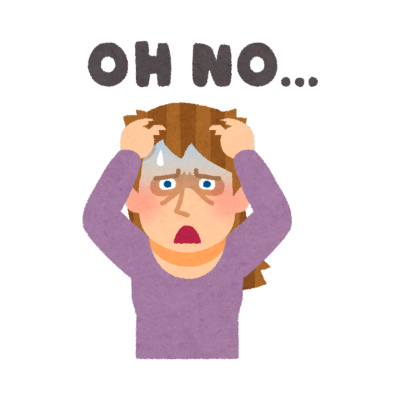

What is Panic Disorder?

Panic disorder is a type of anxiety disorder characterized by recurrent and unexpected panic attacks. These attacks are sudden periods of intense fear or discomfort that may occur without warning and often trigger physical symptoms such as heart palpitations, sweating, shaking, shortness of breath, and dizziness.
Panic attacks may be triggered by specific situations or they may occur unpredictably. People with panic disorder often live in fear of having more attacks, which can interfere with their daily lives.
Symptoms of Panic Disorder
The symptoms of panic disorder are primarily associated with panic attacks and can include:
- Physical Symptoms: Rapid heart rate, chest pain, dizziness, shortness of breath, sweating, trembling, nausea, or abdominal discomfort.
- Psychological Symptoms: Fear of losing control, feeling detached from reality, fear of dying, or feeling like you’re going to faint.
- Intense Episodes: Panic attacks usually reach their peak within minutes, lasting anywhere from a few minutes to 30 minutes.
- Repeated Attacks: Having multiple panic attacks, often with persistent worry about future attacks or avoidance of situations where attacks occurred.
People with panic disorder may experience these attacks unexpectedly or in response to triggers, such as certain places or situations.
Causes of Panic Disorder
Although the exact cause of panic disorder is not fully understood, several factors are thought to contribute to its development:
- Genetics: Panic disorder tends to run in families, suggesting a genetic component that may predispose individuals to develop the disorder.
- Biological Factors: Imbalances in neurotransmitters (such as serotonin or dopamine) and changes in brain function may play a role in the development of panic disorder.
- Stressful Life Events: Traumatic or highly stressful events, such as the death of a loved one, serious illness, or childhood abuse, may increase the risk of developing panic disorder.
- Hyperactivity of the Nervous System: Overactivity in certain parts of the brain, including the amygdala (which processes fear), can make individuals more prone to panic attacks.
Treatment for Panic Disorder
Panic disorder can be effectively managed with a combination of treatment options, including:
- Cognitive Behavioral Therapy (CBT): A form of psychotherapy that helps individuals identify and change negative thought patterns and behaviors that contribute to anxiety and panic attacks.
- Medication: Medications such as selective serotonin reuptake inhibitors (SSRIs), benzodiazepines, or tricyclic antidepressants can be used to help manage panic attacks and anxiety.
- Exposure Therapy: A technique in which individuals are gradually exposed to situations that trigger panic attacks in a controlled and safe environment to reduce fear over time.
- Relaxation Techniques: Breathing exercises, mindfulness meditation, and progressive muscle relaxation can help reduce the intensity of panic attacks and manage anxiety symptoms.
- Lifestyle Changes: Regular exercise, adequate sleep, and a healthy diet can support overall mental health and reduce the likelihood of panic attacks.
With the right treatment and support, individuals with panic disorder can lead fulfilling and anxiety-free lives.